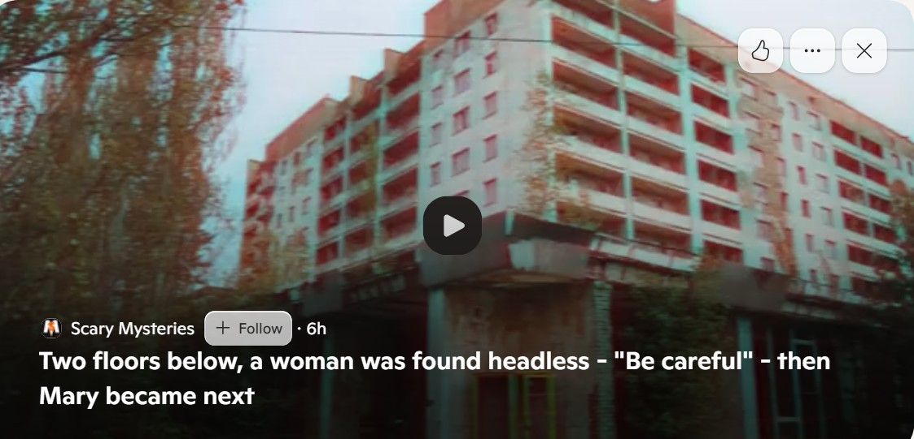

2015¶
First class of January¶
- After Christmas break, Domingo tells me he has “decided” everything is OK and we can continue with classes.
- I’m horrified by his blase demeanor after everything that has happened and I request a new teacher from the management.
- This really really pisses him off.
European concert trips¶
- Before I have finally had enough of him, he tries to persuade me to go on European capital city concert trips.
- He shows me some of the concerts he has in mind; in Austria, Germany, and Holland.
- He spoke about this often while we were friends of sorts.
- Interesting, isn’t it.
Domingo pretends he has another girlfriend¶
- The piano students, including myself, all go to listen to a piano performance at the Dénia Centro Social.
- I sit with Joan Carles and Paqui Fornet.
- Domingo arrives with a very loud woman who talks in a rough manner so that everyone can hear her.
- I later realize that this woman is a nurse, or medical professional, who works at the Dénia medical centre in Carrer de Beniarmut where I was signed up for care since 2022.
- I always saw her smoking outside, sometimes with the scanner technician, whenever I visited my doctor in 2023.
Joan Carles¶
- Joan Carles becomes my new piano teacher until the end of term in June.
- He is quiet and respectful and I feel I can tell him everything that happened, which I do, including Domingo’s inappropriate attitude and sexualization of teenage girls.
- Joan Carles listens, and says nothing.
- I explain to Joan Carles that Domingo shouldn’t ask students out for coffee. It’s inappropriate and causes problems.
- I can hear myself being talked about throughout the conservatory, and the word “coffee” is prevalent.
- The rest of the academic year is uneventful except I feel a lot of negativity towards me at the conservatory.
- I love playing the piano however. It’s a huge privilege and joy. I try and put the weird stuff behind me.
- At the spring concert, I play Bach invention in D minor.
- At the summer concert, I play, from memory Granados Andaluz.
- I also play a mini-concert at the end of the year.
Domingo is all around, circling¶
- Domingo continues to set up small sinister events with other teachers, or him saying things very loudly outside my classroom, things like this, small stuff compared to the conservatory terrorism that went on between 2022-2024, but of the same nature.
- Preliminaries, if you will.
- I often hear him playing the theme from the film Jaws in the next room to where I’m having another class.
Easter¶
- I take regular retreats at the Buddhist centre in Pedreguer.

- I’m stressed and anxious.
- I believe it is to do with historical sexual trauma from 1989.
- My hands make fists like they did back then.
- I don’t know that men are gaining access to my apartment without my knowledge on a regular basis, or that there are spy-cams in the apartment watching me day and night.
- I do some website work for the Buddhist centre which interestingly fails in exactly the same inexplicable way my work with Leon N, Nokia, and others failed.
- I feel like the universe itself is trying to make me appear incompetent and I know that I am not.
- Nevertheless, the repeated failures set a precedence in my emotional makeup and I decide I can never return to a career as a programmer.
- The web-developer I work with at the Buddhist temple is a man from Barcelona, well known to the retreat centre.
- We get into arguments; he is rather unpleasant towards me.
- One time I’m at the centre, he comes on an evening walk with myself and another woman who may work at the Carrefour on the checkout.
- He keeps mentioning how they make all the porn up here in Pedreguer, and pointing to houses where they make it, and snickering.
- At the 2016 mass retreat where all the Tibetans came over from India, he takes the monks out in Barcelona to see prostitutes, and tells everyone about it, as if it’s something to be proud of.
- Horrible man.
- I’m there at Easter 2015 for a retreat.
- On Easter Sunday morning, on my laptop, the Mirror article about Mike Wenham “pops up” on my timeline, around three months after it was reported.
The Chinese restaurant on my return¶
- When I return from the retreat, I go to the Chinese restaurant for lunch.
- Domingo’s “ex” is there with her new partner and baby.
- This is the same lady I see with a clipboard at the conservatory in February 2024.
End of year piano concert¶
- My dad visits and comes to the piano concert at the end of term.
- He cannot stay for the mini-concert I’m scheduled to play the following week.
- He bumps into Domingo in the toilet at the Casa de Cultura while we’re all gathering to play at the concert, he tells me.

- He met Domingo in December 2014 when we went to London together and stayed at my house.
- I ask him if Domingo said anything.
- He says no.
- He did say he was washing his armpits as it was very hot and he had been sweating, and that was why he took so long in the toilet.
Inexplicable anal fissure¶
- One morning, while my dad is visiting, I have a sudden reemergence of colitis symptoms.
- I’m bleeding, profusely, big dark-red drops; there seems to be an anal fissure.
- I don’t understand it.
- I never once considered sedated sexual violence involving my father.
- Could they have entered my apartment in Joan Fuster while my dad was visiting?
- If so, investigators already have the films broadcast on Dénia TV or the various porn networks they’re affiliated with.
- At the time, the injury to my anus is so inexplicable, I put it down to eating bread with my dad while he visits.
- Sometimes, eating wheat does make me bleed, but only a tiny bit.
- I hardly ever eat bread because of my sensitive digestive system with is prone to autoimmune diseases having had a horrible year of colitis only two-and-a-half years before.
- It’s the only explanation I have.
- It heals quickly after dad leaves.
- If Domingo approached my father in the toilet at the Casa de Cultura and scheduled a rape-porn meet up which then took place, a lot of my future years make more sense.
- Would he have said something like, “we’ve been doing it for years, she doesn’t have a clue, she’ll never ever know?”
- Does he put it like this: “Haven’t you always wanted to rape your daughter?”
- Did he show him some examples he carries around with him on his mobile phone for sales purposes?
- Does every sexual deviant go ahead?
- This puts my mother’s panic attack the following year at the Hotel Costa Blanca in a completely different light - and a whole bunch of other women’s panic attacks over many decades we’re now hearing about.
- It also puts my descent into a suicidal depression in 2016 into a new light; something I did relate to sedated-sex-offending, but from 1989 given I had no suspicions about my life in Dénia in 2015.
- I believe I have a memory of me waking up out of a deep sleep to see my dad running out of my room. I get up, heavily, and follow him. He’s in the toilet. I wait for him to come out. He takes ages. When he comes out he rushes straight into his room with his head down and shuts the door behind him. He’s so quick to do this he doesn’t turn the toilet light off.
- Is he hiding his snicker?
- I ask him either then through the door, or the following morning, or both, if he was in my room.
- He says no. He says he was in the toilet. He’s lying. I forget all about it.
- Spy cams will have picked this all up, of course, and likely broadcast it on local and international porn networks; maybe even dad’s porn contacts in High Barnet gave him a viewing, I wonder what else they have been communicating about regularly.
- In any case, the whole region knows about this and I expect this was behind one of the conservatory memes, father.
A serious injury that needed medical attention¶
- Writing in June 2026, when I think back at the injury to my anus that I noticed the next day… it would have been ages after the event, at least 12-hours before I had a good look.
- I think my dad left the following day and I took him to the airport.
- I would have noticed the injury in the morning, first thing when I got up when I showered probably, and I do remember noticing there being a hole all the way through from my vagina to anus, something I felt with my finger, and then I “weirdly” just forgot about it and left it…
- Monitoring on spy-cams and immediate sedating-gas application? I’d put money on it.
- Then when I got back home from taking my dad to the airport, I got a mirror and had a good look and there were massive drops of dark blood dripping out… and then I forgot, like that whole scene just goes hazy… amazing isn’t it.
- So I think it’s likely they sedated me and sent the doctor and gave me stitches; perhaps the doctor living next door (Joan even?) was/is tasked with that sort of thing happening frequently to victims.
- I wonder if you can see evidence of stitches (I assume dissolving) in the body after 10 years?
- There must be some sort of scarring noticeable.
- They must have pumped me with painkillers and sedatives for days after that, to ensure I’d forget about it completely… their well-oiled machine in action.
Threats incoming¶
- Oh, look what they posted up top when I opened a new browser tab, right after I told everyone these facts.

My God¶
- Do they do STD and pregnancy tests, and administer medications and perform abortions while a victim is sedated?
- I bet they do, to an industrial scale, and my guess is the nurses coming in from other parts of Spain and the world to work at the Dénia hospital, or in healthcare anywhere in the region, either end up targets themselves (like my predecessor, the nurse from Madrid renting Bea’s sex-slave, spy-cam apartment in Carrer Furs) and/or working for the gangs professionally for these sick and criminal purposes.
- Was I pregnant without knowing it, two maybe three times since 2006, abortion drugs administered to my water or coffee by the friendly neighbors as soon as they found out?
- It’s almost as if Dénia is the most extreme example of what’s coming for all of us due to men’s obsession with rape-porn, where total obedience to the laws of sedated-rape must be followed:
- Never tell the women unless assured of total and unconditional support in their entirety [sic], like they are in Spain.
- It’s almost as if Dénia itself could save the world with it’s horrific (understatement) example.
- It’s nice to know that trauma therapies like Transforming Touch, and others, are able to rebuild the brain’s connections destroyed by sedating drugs and let memories of events happening while sedated return.
- Could there be a tidal wave of sedated-rape realization horror, just around the corner?
If the worst did happen¶
- This section written soon after initial memory recall in October 2025.
- I hope there’s evidence for it.
- I truly wish I was wrong, but the memory of my discomfiting feelings as I woke that morning is clear.
- It puts so many things into a clearer perspective.
- It certainly puts dad pissing up the wall at the Red Lion bare in front of everyone in a marked light, indeed all the activity up there in 2025.
- For example, my dad does know I have been terrorized, drugged, and poisoned for over 10 years in Dénia by Domingo Cano and his family and associates because I told him.
- He is also aware that these people tried to murder me on numerous occasions.
- If he was horribly involved, he could have, at any time, done something about stopping these people to keep me, and the hundreds of others like me, safe.
- In this scenario, my safety and wellbeing is meaningless to him, my father.
- Perhaps he might believe that what’s happened to me is OK; to be expected by women and children these days, just like the men in France did with Gisele.
- The implications for all women with sexually deviant men in their lives are jaw-dropping and we know men are looking at violent rape porn and pedophilia these days in their billions.
- When I told my dad in September 2024 while we were in Lourdes what was going on, he could have warned me at that point, but instead I went back to Dénia to be murdered still just thinking I was being filmed masturbating at home, that’s all I knew at that time.
- Obviously, sedated-rape can happen to anyone and everyone now, and is becoming more and more OK with men, as we saw with Pelicot and now with the porn-gangs of Dénia.
- Someone like my dad, as with the Pelicot rapists, could stop it at any moment, but they don’t.
- Normalizing this leads us into hell quicker than ever, with goodness knows what ready to step in and use everyone’s foolish men-worshiping feelings about it (oh, boys will be boys, he didn’t mean it, he thought she was dead, and my mother’s favorite, it’s your fault) and make it common practice, perhaps legalize it.
- Then they’ll get bored and need something even more horrific for their broken boners - which let’s face it, they’re probably already doing for the right sums.
- Is this what we want for our beautiful world and for our children?
- Afghanistan rules and worse for women and girls?
Mini concert and award¶
- A few weeks later I perform a mini-concert in room 5 at the conservatory and play a number of pieces.
- Klari actually films it and uploads it to vimeo and I have the links somewhere.
- At the end of the school year there is a concert in the plaza by the tunnel and I receive a prize.
- At that concert, I see Domingo.
- He’s talking seriously with the woman who runs the art shop who I have had dealings with previously.

- There’s a man in the shop with her sometimes who might be my neighbor at Carrer Furs’ son.
- I got all my certificates framed there for some inexplicable reason.
- I very much liked her marvelous cat, who rather liked me back too.
- Interestingly, Maria Hontanilla spoke of the restaurant there being amazing for food and it sounded like she was saying we all go there to eat, it’s really good, like a meeting place. You can ask her where she meant.
- Anyway, the shopkeeper (who is a bit witchy) and Domingo were talking seriously, huddled down.
- It looked like he was asking her to do something, and she was saying no.
- All for my benefit probably although it was never clear what he was up to, unless everyone knows she’s an actual witch.
- Perhaps the husband is the local “healer” who put my friend Elke in touch with a man who she now slaves for in the fields at nearly retirement age.
Grunt Work¶
- I start thinking about my next novel, Grunt Work.
- The first few lines came quickly, forcefully, and powerfully; before anything else.
- They are significant.
- I’ll have to check my notes but it’s something like…
Grunt Work
I’ve been watching you. For years. Biding my time. I know all your ways. Your tricks. You think I’m stupid. Your weakness. I know you think I’m stupid, because I let you trick me, more than once. Have you forgotten? I haven’t.
- When I think back over my life, I realize that rape and sexual assault in 1989 silenced me, but it didn’t stop me thinking.
- So, I would rarely converse with people normally due to the fear I carried with me everywhere I went.
- Socially I used alcohol to cope, and thus talked varying amounts of rubbish to everyone.
- In the daytimes, and even while drunk, I kept quiet about the things I noticed people saying and doing.
- I watched and learned.
- Interesting.
- Grunt Work is a murder mystery set in the future (!).
- The future in the book is a time after a revolution where women take over from men, and how equally disastrous that is for humanity just in a different form.
- (Could we imagine that there might already be a disastrously self-destructive matriarchal society about to destroy the world?) - that’s the new bit.
- My main character is a university professor who is a historian; an expert in the revolution that happened so many hundreds of years before; this is how I bring the whole thing in and describe it… how it was so wonderful at the beginning, how everyone was so hopeful, and how it shifted into same-same evil over time - except she’s not able to talk about it like that, obviously, but I as the author get to tell that story through her voice.
- Then, there’s a janitor - all the men have menial roles - and they fall in love somehow, and he turns out to be (there’s a film a bit like this already..) extraordinarily intelligent, and there’s that part of the story.
- I get to turn sexism on its head and it’s really amusing to do that.
- And then, there’s a murder mystery at the university. People keep getting bumped off. No-one knows whose doing it and these two solve the crimes, except at the time, even now, I don’t know who the murderer is, it could be him, even her… who knows.
- The reader might assume that the opening lines are said by the murderer… but are they? Even I don’t know, yet.
- I mean, it’s obviously my life’s voice, and many many thousands of women’s voices in parallel.
- Grunt Work: devised while being sedated and raped repeatedly at Joan Fuster.
Kailash¶
- I circumambulate Kailash this year with a bunch of Americans, an Irish woman, and a Nepalese shaman.
- They’re all bon shamanic practitioners; two are medical professionals from New England hospitals, there is a therapist and a nurse and a builder (my room mate), and I forget what the men did apart from the shaman.
- As we’re walking through the sky burial area, I hear a voice say “Katie”, the name I commonly used at that time.
- I tell my traveling-companions what I heard.
- They all say things like, oh I’m always hearing my name, which was quite nice.
- The voice was very friendly, very welcoming, masculine.
- The night we completed the Kailash kora, I excitedly told my tent-mate the whole precis of Grunt Work.
- I was absolutely 100% sure that it was the next book I was going to write and I was so excited about it I could hardly hold it in.
- In fact, the whole time I was at Kailash I was exuberant.
- I felt like I was in heaven itself, even with the second-most-massivest genital boils I ever had.
The abomination of desolation in the holy place¶
- If anyone tried anything like this here, they be done for.
- Although, the shaman expressed concern that a Chinese woman had recently been attacked and murdered here, the implication was sexual, and it was then claimed she had been eaten by dogs. I heard what he was saying, when he said it without words.
Viktor¶
- A man called Viktor takes our musical language class from September.
- Mercedes and I are in the same class, with a couple of youngsters.
- One of those youngsters was a Russian girl who, from some of the things she said to me, seemed to have information about what had been going on with me and Domingo.
- Viktor is a very nice man; good-looking too.
- I often see him with Domingo.
- He was at the concert with the nurse sitting next to Domingo.
- In July 2025, I suddenly realize I did not see him at all at the conservatory over the last years, and I find myself concerned for his safety and wellness.
Nati de Prati yoga teacher and porn-gang target, just like me¶
- I go to yoga classes with a lovely woman called Natalia. She’s from Argentina.
- She moved to Dénia from North London where she was lead assistant at the Ashtanga yoga centre.
- She studied under Hamish at the centre in Kings Cross/Euston area of North London.
- In July 2026, on a course, I curiously bump into a woman who also studied under Hamish at the North London centre and I tell her about Natalia, and myself.
- When I’m in Domingo’s clutches at the conservatory in 2014, she is also in his clutches somehow - intrigue, love-triangle, no doubt drugging.
- I notice a lot of weird things going on around her which make me feel uneasy.
- My friend Elke - a woman in her 60s now effectively enslaved and tilling the fields like a donkey is starstruck by her.
- I used to think she was just being silly but now I recognize it as a manipulated idea/emotion.
- They were all connected up online and she saw her regularly.
- Elke is also ridiculously empathic.
- There’s a couple of other teachers giving classes at Natalia’s school in the Calle Loreto; a long dark-haired pale woman, and a short, stocky and sullen blond woman.
- Domingo knows Natalia, apparently well (she lends him her Oyster card for his trip to London) but he doesn’t extrapolate, and instead he behaves as if he is playing us off against each other.
- It’s ridiculous. He obviously thinks we’re idiots -> (a statement made a long time ago and prior to remembering the switcheroo-porn).
- He shows me pictures he has of her in advanced yoga poses in his flat; the apartment with the British ex-pat’s Royal Daulton collection he’s planning on stealing when he leaves.
- It looks like Natalia is unaware she is being photographed.
- She is an excellent ashtanga yoga teacher and practitioner.
- Ana the violin teacher goes to her classes too. Yup.
- I think Ana Requena’s short boyfriend (driving the car and ducking down during my horror-show some years later) also attended classes.
- There were a couple of young nice-looking men there too.
- Was Ana the love-triangle for Natalia as well as me? Is that her major role for the honey-trap porn-gangs? She does it so well.
- Anyway.
- At some point during the year, Natalia closes her yoga school.
- It’s all very sudden and she’s only been open for a short time. It doesn’t really make sense and she is not teaching anywhere else.
- Her classes were perfect; really professional and in a great space.
- The other teachers that taught there were not as good as her, by an enormous margin.
- When I ask her what happened, why is she closing her excellent school, from what she said she appeared to have no choice in the matter but the reason was very unclear from what she says and she’s fluent in English.
- I wonder, at the time, if jealousy has played a role because of the weirdness around her; but perhaps jealousy was the mask, the explanation for something more sinister.
- I go to a different yoga class instead, in a different venue and run by one of the other women that worked in Natalia’s yoga school; the long dark-haired woman. Natalia is not giving classes there.
- Of the three teachers from the Calle Loreto studio, only Natalia is not working as a yoga teacher.
- The long dark-haired woman looks like one of the women who are working with her now in 2025, and you can see her on the website. She is the one who doesn’t have her back to the camera.
- Ana is floating around at the class, as is the small man I see her with in 2024 and it is him that talks to me.
- A bunch of other Spanish people are at the class.
- The woman gives a Sivananda yoga class but ends in a ridiculous manner by playing strident and discordant notes on the harmonium during rest pose.
- It’s like a horror movie (it’s meant to be) and I say so.
- I guess Ana wasn’t there at that moment or she would have had to agree with me, and if she didn’t, I’d be on to her big time.
- When I mention it, everyone says, and coming first from the short boy, “Oh, we got used to it.”
- They’re lying of course, but there is a marvelous Freudian-truth here.
- I realize now that they didn’t want me there and needed an exaggerated way to make sure I didn’t come back.
- It worked.
- At the time I did not know this was staged and this is the sort of terror-vignette that the town might act out to control foreign women they’ve targeted.
- Looking back, I’m assuming this new class was another “introduction agent” set up, a regular event that tourists and newcomers to the area might like to attend, and thus be assessed for whether they’d be good porn fodder and/or how wealthy they are.
- It’s clear these people have been terrorizing women and children, with the sole intention of making porn and money from them, for a very long time, and this explains their expertise when terrorizing me.
- I’m guessing they did not want me there because it was “crossing the threads”; i.e. I was already making money for the porn gangs while sedated in my apartment in Joan Fuster 11 three or four nights a week, and so I “belonged” to someone else’s sick porn-scam.
- I go to another class with the other teacher from Natalia’s original school. It is even worse in many ways.
- The teacher was an unpleasant little woman, short blond and gloomy, who always seemed to be a bit stoned and jeering at someone or something.
- She may be related to Bruno - main-man trumpet teacher from my switcheroo porn horror; she looked like him.
- It was all so weird, I wondered if she had been jealous enough of Natalia to force her out.
- It was all I could think of.
- After one class with her, I was mentioning my sizeable belly in a lighthearted manner - I termed it my “bulk” - and she looked alarmed, scared even, when I put my hands over my belly.
- She didn’t know what I was referring to with this word.
- I wonder if she misunderstood my message to be referring to pregnancy?! But why did she look so alarmed?
- Was Natalia already pregnant by then, just a few months after she closed her school? The age of her son Bruno matches.
- They all obviously knew I was being sedated and raped regularly in my apartment (not Natalia).
- Natalia offers no alternative classes at the time or I would have attended. She was really an amazing teacher.
- When I look Natalia up in 2025, I see she is running a yoga school in the campo, super-professional website, retreats in mansions for women, etc.
- She has had a son also, calling him Bruno just like his father, in the interim of about 10-to-12 years since I saw her last.
- While being hacked, I often see videos on her Facebook page get highlighted for me, and there is often a man I recognize in them.
- He looks like one of the men on the beach I videoed when they were really panicking in October 2024, just before they decided to (try to) murder me.
- He also reminds me of a man I met at the Vipasana ashram close to Madrid in December 2023, Rodrigo.
- This was the same Rodrigo who had a relationship with unstable and unwell Maria who signed my North London rape-gang statement to the Metropolitan police, another target.
- I see him and Natalia on Facebook often.
- Sometimes they’re on a boat moored in Javea - it looks like - that she sometimes does yoga classes on, and he is often at the wheel and always with his back to the camera.
- When I see Natalia speaking in videos, I get that feeling of needing to cry but knowing that if if starts it will not stop and so it’s not at all safe to start.
- Someone posts a significant picture of what looks like Natalia screaming in a stolen account’s profile while I’m drafting this police statement.

- Did they produce a lot of porn from Natalia including pregnancy porn (it’s a massive lucrative genre)?
- Did her baby son star in the baby-rape porn they’ve been industrializing down there?
- I just want to say, there’s a lot of us victims, and we can heal. I’m the proof.
- When I think about how the gangs manipulated me online to want a child, and to even expect that this was something that was definitely going to happen - over the summer of 2024 while sedating, drugging and raping me at the same time - I started to wonder about what happened to Natalia given she was in Domingo’s and the porn gang introduction agents’ clutches when I first knew her.
- I notice at her yoga school they are doing micro-dosing events with psychoactive substances, and I also saw events related to sexual practices.
- The page posts pictures of students regularly.
- Has she become yet another introduction agent, with or without much choice in the matter?
- Friendly hackers informed me that she indeed suffer something like my experience online and in the town.
- They did the same to her, hackers said.
- Was it switcheroo also, or just plain ole criminal porn?
- Did they manipulate her into having a child?
- What happened with Bruno, the father? Does she even know him?
- Is she required to tell someone about all new students that might want to join classes with her, or do they just monitor everything she does?
- My guess is all the marketing, photography, and tech administration is managed and paid for by the porn gang business infrastructure and connects into porn-addict networks.
- Do they offer up students at her school to millions of online porn-addict who then let the gangs know somehow - do they do an online poll? - who they want to see naked?
- I find out at Loka Yoga in Bali in 2026 that Natalia was lured to the town by a Scottish woman called Stella - another assistant at the ashtanga centre in Euston.
- Stella was working closely with the salmon-mousses, Adams, and the Lopez Cano’s - and even Richard Freed knew her.
- I believe she was either about to be thrown under the bus by the mousses in 2026, or wheeling her out for me was more proof they intended to murder me in Bali.
- This would be one supply chain link for foreign victims into Dénia and I wonder if any of the other foreign yoga teachers in the region came in the same way - Dutch Trudi would be good to look at too.
Vipasana Maria¶
- I’m so disappointed with the yoga offerings in the town, I search for someone practicing meditation.
- I find a woman who is an adherent to Goenkaji’s practices, the same meditation I do.
- She lives at 16 Calle Deneb in the top flat.

- She is very unwell. It looks like she has liver disease. Her stomach around her liver is swollen and distended.
- I ask her about it.
- She is extremely anxious about her health. It’s clear something is very wrong indeed.
- She says she has been to the doctor numerous times, and has had countless hospital appointments in Valencia, and they always tell her nothing is wrong.
- I don’t understand it.
- She gets irrationally angry at times.
- She signs my statement to the Metropolitan police as a witness in person and I send it by post to London.
- Was Maria being poisoned?
- I meet someone who knows her during my intense drugging and harassment period over Christmas 2023 at Vipasana meditation near Madrid that culminates in my other “friend” poisoning me to shut it all down, temporarily of course.
- Could this man be the same man who may have fathered a child with Natalia? Although I’m guessing that was the deep-set man I’ve described as being one of the trumpet teachers, a man who has possibly fathered 100s of children in the region.
- Did Maria recover? Or did they want to take her apartment from her?
Maria, her dog, and myself are sedated in my lounge in Joan Fuster 11¶
- Maria comes to visit and brings her lovely little dog who I adore.
- Maria is going to sign my witness statement for the Metropolitan police this evening.
- She has an appointment in town so she can’t stay long.
- We’re sitting in my lounge.
- Maria and I are on the sofa and the dog is at my feet.
- Something happens, there’s a pause.
- The next thing I know is I’m looking at the dog and it seems she’s (I think a girl dog) awakened from something.
- Her face and ears twitch and she looks at me.
- She’s confused, and angry with me.
- I don’t understand it as the dog is lovely and we are friends.
- Maria can’t understand what happened to the time and has missed her appointment.
- I believe we were sedated together that evening for maybe an hour through the air conditioning unit.
- It is my belief that flats set up this way require conspirators in the building who are watching via spy cam and can apply the gas at the right time.
- It is my view that at Joan Fuster, this service was supplied by my direct neighbor, a single man living alone who looked a bit like Joan the doctor who came to chamber music classes with trumpet teacher number two.
- That the Rodrigo character - who knew Maria romantically and was part of the relentless mass sex offending stalking in Madrid at Christmas 2023 - said her random angry outbursts were a problem for him is dripping with arrogance and evil and I hope he spends most of the rest of his life in jail for mass rape and conspiracy to murder women and children.
Horror novel AntiChrist by Jack Chardwood¶
- Domingo the piano teacher’s outrageous behavior inspires me to write a horror novel.
- Most of this book is my attempt at trying to make sense of how men can hate women so much. It is also my attempt at healing such lost people.
- I publish the book on Amazon in October. Click the image for more info.

- Curiously, much of what I wrote in this novel parallels exactly what has happened.
Greek man with a twitch, and Sylvie¶
- I start hanging out a little bit with a French woman who lives in Dénia.
- Her name is Sylvie and she worked for an estate agent on the Avenida Marquesat. I visited her there on a few occasions.
- Our relationship is ostensibly for a language interchange but we end up just speaking English.
- She introduces me to her friend, a Greek man. Dimitri or Andreas may have been his name.
- He may have been one of the muscle men outside the tunnel I saw in December 2023.
- Sylvia is suggestive about him, that he likes me maybe. I’m not interested.
- He’s been bodybuilding.
- One evening he walks me home (unnecessarily) after the three of us were out somewhere.
- He blinks at me in a weird way the whole time.

- It’s very strange.
- I’m reminded of a PTSD twitch after child sexual abuse that I may have mentioned to the police in 2006.
- If the Greek was “twitching” on purpose to upset me, like, perhaps, the people at the meditation retreat may have been in December 2023, then the question is how would he know about the twitch?
- It seems to me, the only way anyone could have known about this was if they had seen the child gang-rape porn from 1989 where, I have been led to believe, my eyes were twitching as the only possible way of expressing myself while sedated during a vicious and violent sexual attack by multiple men.
- Do events like this trigger me going back to the police with a fuller statement a month or so later?
- If so, it does seem to suggest Dénia criminals already had information that could jail pedophiles and decided that instead of making the world a better place, they would use the information to terrorize a victim of pedophile gangs even more.
- If true, the information and video clips must have come from the Smiths.
- I get angry with Sylvie for introducing me to this dickhead and I never see her again.
- I wonder where she is now.
- Is Sylvie Silvia? If so, is she safe and well?
The child trafficker’s instructions¶
- One evening I’m walking to the conservatory from my apartment in Joan Fuster.
- I head towards the town centre by walking through the small kind-of alleyway after passing over the train tracks.
- There is a group of men walking with two small children, a boy and a girl.
- The boy could be 4 or 5, the girl a little older.
- The men are young Spanish men.
- The scene is a little incongruous and then more so when I hear the main man telling the children in a loud and strict voice that they are going to meet a man and they have to call him uncle, tio.
- A cold shudder runs up and down my body.
- Was this man another trumpet teacher?
- He looked like Mark one of the seven switcheroo devils although I get strangely confused about this because I did not recognize him at the time as the man who had been in my language class just a couple of years before.
- They were already sedating and raping me at that time in spy-cammed-up Joan Fuster, so this incident will have been set up so that I do, in fact, notice him.
- Was it a test maybe?
- I wonder if my confusion around his identity confirms that brain-damaging was already in place and my ability to recognize people and objects out of context was already impaired, meaning the switcheroo was in serious planning.
- Is that why Maria Hontanilla and others tried their very best to make me stay in 2016 when I was depressed, even to the extent of “organizing” a job for me at the hospital?
- It’s extraordinary.
Frozen shoulder¶
- I start to suffer really badly with frozen shoulder in both shoulders.
- It was really bad on the right side and I could not move my arm without a lot of pain.
- I end up suffering with this, to a lesser and lesser degree, for about 6 years.
- I still have very little mobility in my shoulders as a consequence.
- Frozen shoulder can sometimes be considered an autoimmune problem, and can also be the result of side-effects from certain medications or substances.
- It could also have been a trauma reaction from being held down and raped while sedated in my apartment in Joan Fuster repeatedly.
- I think this, along with a persistent rib injury and other unusual injuries I have no memory of occurring, confirm repeated blows to my body in the form of heavy men leaning on it repeatedly and being unaware they’re causing me injury.
- The way my arms felt in 2023 and 2024 - weak, numb, as if they had suffered some physical trauma I was unaware of - made me realize that the frozen shoulder problem from 2015 was suspect.
- I had assumed it was due to my volunteering at the baths at Lourdes where you have to lift quite heavy ladies into and out of the healing water.
- I remember telling Sandra this was why I had stopped volunteering in 2017. She will have known the truth behind it.
Depression¶
- I start to become suicidally depressed around September 2015.
- I believe it was because I was being sedated and raped, and live-streamed throughout the town and on porn networks.
- I related it to an example of exactly the same thing, the child sexual abuse from 1989, and this sparked my statement to the police.
Maria Hontanilla¶
- In September I start the second year of professional studies and Maria is my new teacher.
- I would have preferred to continue with Joan Carles but the decision has been made.
- I’m sick a lot this autumn with continuous colds and flu.
- Maria is too close for comfort physically, in class, and she makes me feel uncomfortable.
- I never say anything about this as I assume it is the Spanish way.
- My studies are fine but I have other things on my mind.
- Mercedes begins with Domingo as her teacher and it is clear she was never particularly advanced on the piano and doesn’t even know how to pedal.
Amma in Barcelona¶
- An extraordinary event in terms of nearly everyone in Spain (it seems in retrospect) knowing who I was, I believe.
- I shared a room with an Angolan woman.
- If I had been sedated and raped in that room, she would have been involved.
- Curiously, an image of her popped up in ChatGPT, so I expect we’re both starring in porn somewhere, me sedated.
- The manager of the volunteers was HIDEOUS to me; especially when I requested a single room. She literally went out of her mind with rage at me.
- At the end of the event, this woman told me she hoped I was going to crash my car on the way back down to Dénia, I kid you not.
- Seems likely they were doubling up as a porn studio at Amma Barcelona.
The abomination of desolation in the holy place¶
- I’d put money on this being another one of those holy places mentioned in Daniel and Matthew?
Statement to the Metropolitan police¶
- Since 2006, when I first reported child sexual abuse to the police, I had spent a lot of time thinking about what had happened to me in 1989, and over the years I had pieced together a more complete picture.
- Domingo’s behavior was so disturbing to me that I realized that I still had a lot of healing to do around personal boundaries, although it was clear the situation with Domingo had been very much out of my control.
- His behavior somewhat triggered my decision to return to the police and make a fuller statement.
- Since 2006, there were hugely positive developments in terms of justice for sexual abuse survivors, see Jimmy Savile, etc., and the police made it clear that sex-offense victims will be believed.
- I take a full month to write a statement to the Metropolitan Police on my laptop in my living room. When I’m done, on 1 November 2015, I send it to them via email.
- The statement is very detailed; names, addresses, car descriptions, and events such as being drugged and gang raped, and specifics which suggest I had been sedated on more than one ocassion in the presence of groups of black men.
- The process of writing this re-traumatizes me massively. I have no emotional support. My family is uninterested and extremely unhelpful.
- The police arrange for me to make another video statement in London.
- They claim, at that time, they have no records of my visit in 2006 but that seems unlikely.
Were Dénia hackers reading my police statement as I wrote it in 2015?
- From what I know now, I’m pretty certain the hackers who targeted me over the last years (2022-25) had access to my home network at the time I wrote this statement.
- Words, phrases, and behaviors I detailed in the statement were re-enacted exactly by teachers at the conservatory as part of the terror they inflicted on me; clearly with the intention of triggering severe psychological and emotional distress.
- It may be sensible to assume that, if the hackers were members of mass-voyeur porn gangs, the more sordid details of my statement would have interested them greatly.
Something I forgot to mention at the time¶
-
Because the very idea of Matthew Copeland somehow being involved in it all was… too far from something that might upset.. “the brain needing to keep itself sane”.
- He contacted me during the time I was writing this.
- We chatted online.
- Interesting.
- Boop.